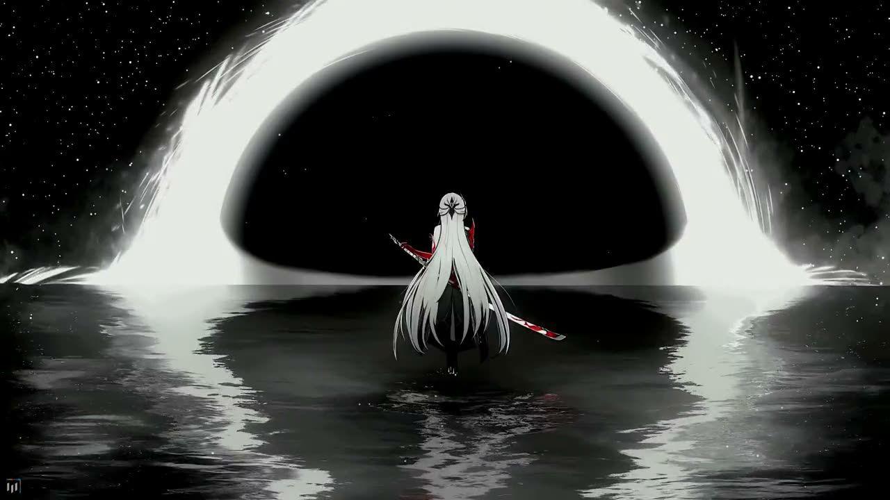
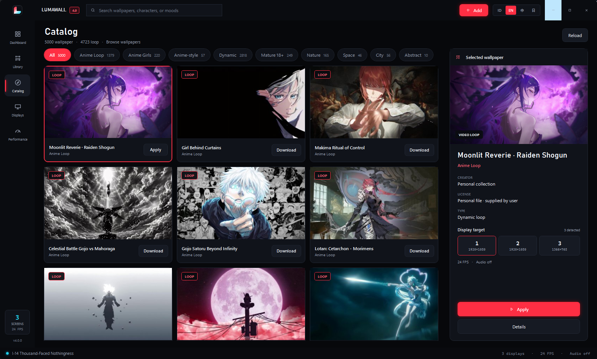
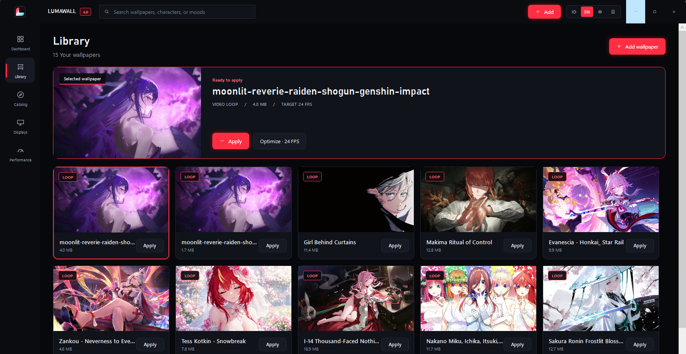
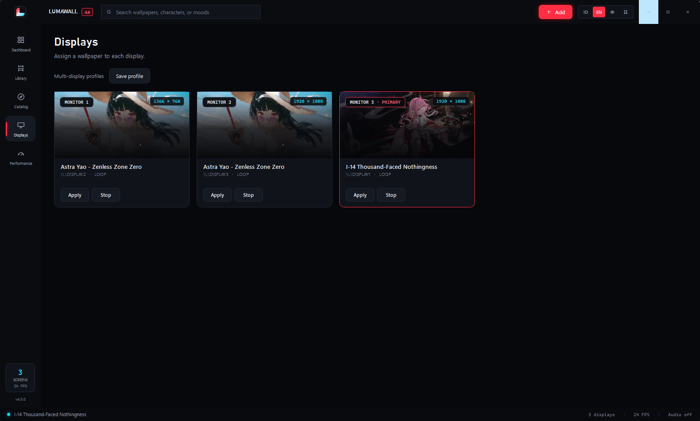
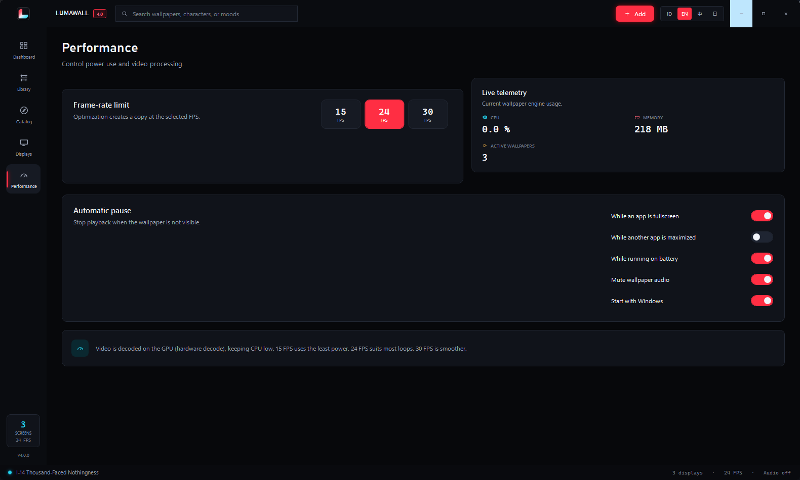
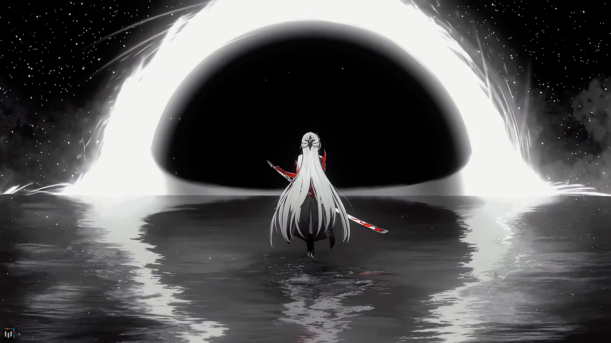

Video didecode chip grafis
Video diproses blok khusus di chip grafis (NVDEC atau DXVA2), lalu dikomposit lewat DWM. Saat tiga wallpaper 1080p berjalan bersamaan, proses utama LumaWall memakai CPU di bawah 1%.

Video diproses chip grafis, jadi CPU tetap di bawah 1%.
Buka game fullscreen, dan wallpaper di layar itu berhenti sendiri.
Enam hal yang biasanya bikin wallpaper bergerak ditinggalkan: CPU yang panas, game yang tersendat, ikon desktop yang tidak bisa diklik.
Video diproses blok khusus di chip grafis (NVDEC atau DXVA2), lalu dikomposit lewat DWM. Saat tiga wallpaper 1080p berjalan bersamaan, proses utama LumaWall memakai CPU di bawah 1%.
Game fullscreen di monitor kedua hanya menghentikan wallpaper monitor kedua. Monitor lain tetap beranimasi. Tidak ada lagi wallpaper yang ikut mati hanya karena ada aplikasi di layar sebelah.
Pause dan resume dipicu langsung oleh event sistem Windows. Saat game ditutup, animasi wallpaper kembali berjalan dalam ratusan milidetik, tanpa klik atau sentuhan.
Pasang video berbeda di setiap monitor, lalu simpan seluruh susunan sebagai profil dan pulihkan dengan satu klik. Kalau tata letak monitor berubah, LumaWall menyesuaikan sendiri.
Cari berdasarkan karakter atau suasana, lihat pratinjau, lalu unduh
langsung dari dalam aplikasi. Setiap unduhan menyertakan file
.license.txt berisi kreator, lisensi, dan tautan sumbernya.
Wallpaper ditempatkan di lapisan desktop Windows, tepat di bawah ikon. Ini bukan jendela overlay, jadi ikon tetap bisa diklik, tidak muncul di Alt+Tab, dan tidak menghalangi aplikasi apa pun.
Diukur pada tiga monitor 1080p dengan tiga wallpaper video berjalan bersamaan.
Seluruh isi video ini diambil dari aplikasi yang kamu unduh, bukan mockup.
Diambil langsung dari aplikasi, bukan dari rancangan.




Bawaan Windows menangani gambar diam dengan baik. Untuk video, ada beberapa hal yang tidak bisa dilakukannya.
| Fitur | LumaWall | Wallpaper bawaan Windows |
|---|---|---|
| Wallpaper video di setiap monitor | Ya | Tidak |
| Hardware decode GPU | NVDEC / DXVA2 | – |
| Pause per monitor saat fullscreen | Otomatis | Tidak |
| Wallpaper berbeda tiap layar | Ya | Terbatas |
| Profil susunan multi-display | Satu klik | Tidak |
| Katalog wallpaper bawaan | 5.000+ | Tidak |
| Pemulihan otomatis setelah Explorer restart | Di bawah 4 detik | – |
| Harga | Gratis | Gratis |
Angka performa diukur pada Windows 11 build 26200, Ryzen 5 5600, GeForce GTX 1080, tiga monitor 1080p dengan tiga wallpaper H.264 berjalan bersamaan. CPU dibaca dari Performance Monitor, waktu resume dari log aplikasi yang mencatat setiap perubahan status playback.
Aplikasinya sama di ketiga format. Yang berbeda hanya cara memasangnya.
Untuk pemakaian sehari-hari. Pasang seperti aplikasi Windows biasa, lengkap dengan pintasan Start Menu dan opsi berjalan otomatis saat Windows menyala.
Unduh installerKalau kamu ingin Windows yang mengurusnya: pasang lewat Microsoft Store atau sideload, dan pembaruan serta penghapusan ditangani sistem.
Unduh MSIXUntuk mencoba dulu tanpa mengubah apa pun, atau dibawa di flashdisk. Ekstrak ke folder mana saja lalu jalankan; tidak ada yang ditulis ke registry.
Unduh portableTidak. Video didecode di GPU, bukan CPU. Pada tiga wallpaper 1080p yang berjalan bersamaan, proses utama LumaWall memakai CPU di bawah 1%. Aplikasi juga berhenti melakukan decode saat layar terkunci, layar mati, atau saat komputer memakai baterai.
Wallpaper di monitor yang tertutup game langsung berhenti, dan berjalan lagi begitu game ditutup atau diminimize. Pause bekerja per layar, jadi monitor lain tetap beranimasi seperti biasa.
Bisa. LumaWall menempatkan wallpaper di lapisan desktop Windows, tepat di bawah ikon. Ia bukan jendela overlay, jadi tidak mencuri klik, tidak muncul di Alt+Tab, dan tidak menghalangi apa pun.
Bisa. Klik Tambah lalu pilih file video atau gambar milikmu: mp4, m4v,
wmv, avi, mov, webm, jpg, png, atau bmp. Untuk setiap unduhan dari
katalog, LumaWall juga menyimpan file .license.txt berisi
informasi kreator dan lisensinya.
Gratis, tanpa iklan, dan tanpa versi berbayar. Tidak ada batas jumlah wallpaper maupun jumlah monitor.
Lewat Settings › Apps seperti aplikasi Windows biasa, atau lewat uninstaller di folder pemasangan. Semua berkas ada di satu folder dan bisa dihapus seluruhnya tanpa sisa di registry.
Tidak ada batas di sisi aplikasi. Setiap monitor yang terdeteksi Windows mendapat wallpaper, pengaturan, dan status pause-nya sendiri, dan susunannya bisa disimpan sebagai profil.
LumaWall memeriksa kesehatannya setiap dua detik. Kalau jendela desktop hilang, wallpaper dibangun ulang dan dipasang kembali secara otomatis dalam waktu kurang dari empat detik, tanpa menjalankan ulang aplikasi.
Tidak ada iklan, akun, maupun telemetri. Satu-satunya koneksi internet terjadi saat kamu sendiri mengunduh wallpaper dari katalog.
Antarmuka tersedia dalam Bahasa Indonesia, English, 简体中文, dan 日本語. Kamu bisa menggantinya kapan saja lewat pemilih bahasa di bar atas.

Gratis, tanpa iklan, dan kamu akan lupa kalau ini sedang berjalan.